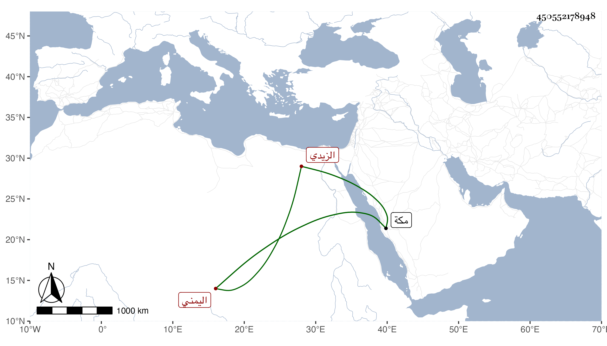

0902Sakhawi.DawLamic.ITO20230111-ara1.EIS1600.450552178948
Biography ID: 450552178948
927
علي بن أبي القسم بن محمد بن حسين اليمني الزيدي ويعرف بابن شقيف . كان من أعيان الزيدية بمكة ممن يفتيهم ويعقد لهم الأنكحة . مات بها في ذي القعدة سنة ست عشرة ودفن بالمعلاة وهو في أثناء عشر الثمانين ذكره الفاسي في مكة .
